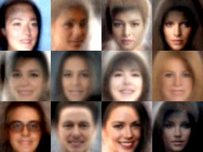
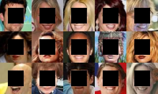
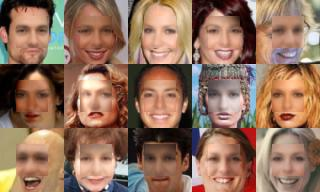
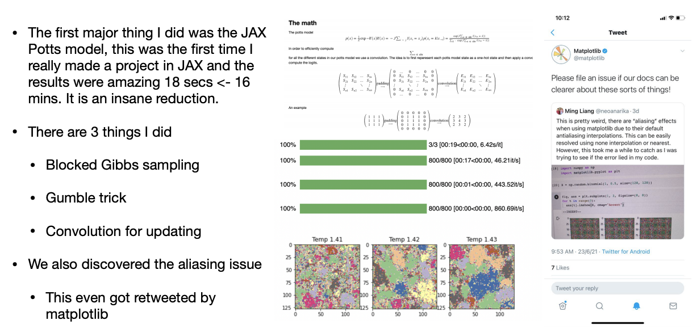
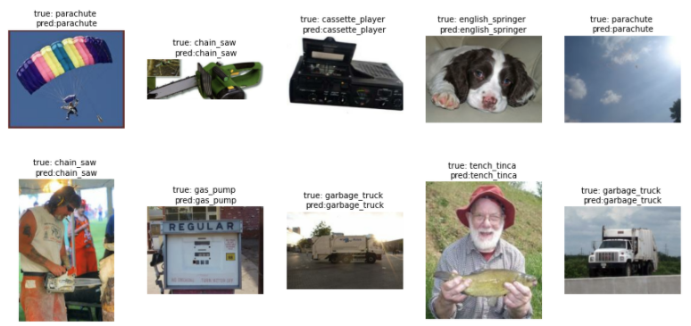

This page summarizes the contributions made to the pyprobml repo by some awesome members of the GSOC and Outreachy communities during the summer of 2021. The students were mentored by Kevin Murphy and Mahmoud Soliman.
The goal of the summer project was to create code to accompany my new textbook, Probabilistic Machine Learning. The first task was to finish translating my old Matlab code to Python, using modern libraries like sklearn and JAX. Fortunately, the students finished this translation task quicker than expected, so they had time to make lots of interesting new content. Below I give a little taste of some of these new examples. But first, let me introduce the students...
| Name | Country of origin | Current institution | End of summer report |
|---|---|---|---|
| Aleyna Kara | Turkey | Boğaziçi University, Turkey | Blog |
| Drishti Patel | India | Arizona State University, USA | Blog |
| Gerardo Duran-Martin | Mexico | Queen Mary College, London | Blog |
| Ming Liang Ang | Singapore | National University of Singapore | Blog |
| Srikar Reddy | India | IIT Hyderabad | Blog |
This uses an HMM with $K$ hidden states to segment a scalar time series
into different "regimes".
The observation (emission) model is Poisson.
The original notebook for this demo
was written using the Tensorflow probability distributions library.
Unfortunately the TFP source code for the HMM class
is somewhat hard to read (mostly due to the need to handle batches), so we decided to write a
pure JAX implementation of HMMs.
This is much simpler, due to JAX primitives such as vmap.
Our code has since been upstreamed into distrax library
from Deepmind. (Distrax is a JAX version of part of the TFP distributions library).

This colab uses this pytorch code to demonstrate how to fit a mixture of low-rank Gaussians (i.e., probabilistic principal components model) to the CelebA face dataset.
After fitting, we can easily generate samples, and perform imputation
from occluded images, as shown below.
  
We fit a shallow MLP to a sequence of (x,y) pairs which arrive in a streaming fashion.
One epoch of Bayesian training trumps multiple epochs of SGD training!
Summary slide below. Note the phase transition at J=1.42, as predicted by theory.
This demo took 18 minutes with numpy+numba, but only 6s with JAX+math tricks :).

ImageNette
is a small version of Imagenet with just 10 classes,
and ~10k training and ~4k test examples.
We used a pre-trained
CLIP model to perform feature extraction,
and then fit a linear logistic regression model,
using
sklearn,
flax,
and pytorch lightning.
Since the model has a convex loss,
all methods get the same test set accuracy, namely 98.98%.
Sample results below,
